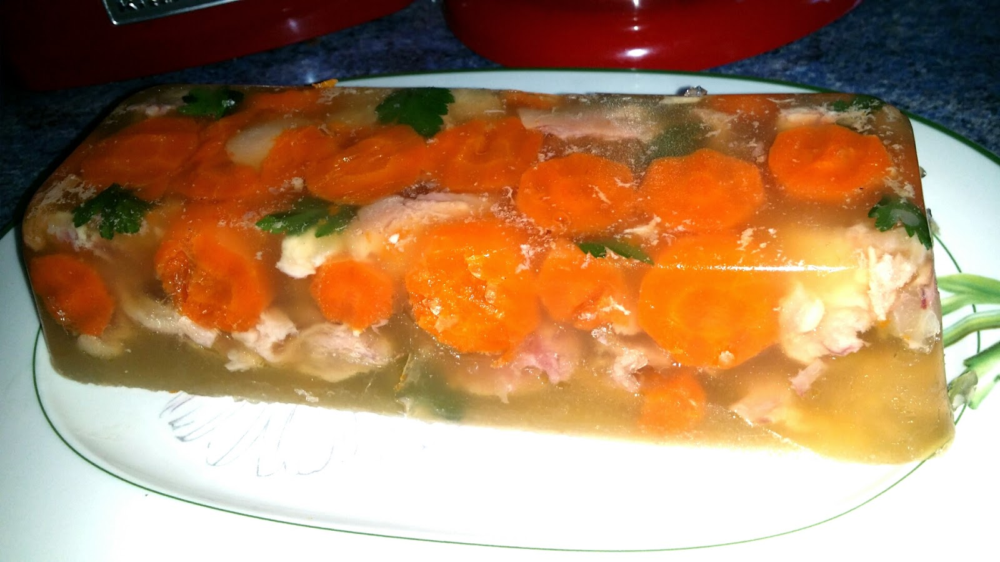

Home Page
Cold Kholodets

Description
This yummy kholodets is a super flavorful and rich beef and bone broth, chilled with added gelatine to make it a jelly rectangle. Very pleasant on a cold russian day. Eating it is like eating an adult version of a gummy bear!
Ingredients
- Beef Broth - make broth, i don't know.
- Gelatine - just in case. Also, don't use Jell-O packets.
- Chicken Feet - optional, but highly recommended. More collagen and beef flavored pedicure.
Cooking Steps
- If you have chicken feet, drop em with beef broth and boil until soft. You can wash them too beforehand.
- No chicken feet is saddening, but you still bring broth to a boil.
- Add gelatine and chill out.
- After it's chilled, you have kholodets! Veri gud. Now you will grow strong, ti nash krepk'iy oreshek!
Return to top